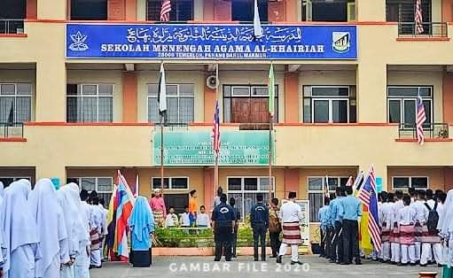
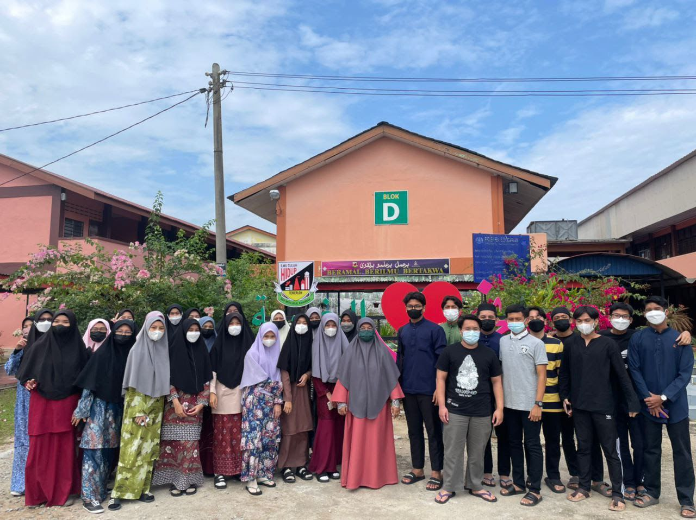

My Education
Academic Background
My journey through education has been a fulfilling one, shaping both my intellect and character. Here are the milestones :
-
Diploma Informatik Perpustakaan (2022-now)
Pursuing my diploma in Library Informatics at UiTM KEDAH. This program has exposed me to various aspects of library, information technology, and management. -
Sekolah Menengah Agama Al-Khairiah (2017-2021)
Completed my secondary education at Sekolah Menengah Agama Al-Khairiah, where I gained a strong foundation in both secular and religious studies. -
Sekolah Kebangsaan Bandar Temerloh (2011-2016)
Started my educational journey at Sekolah Kebangsaan Bandar Temerloh, where I developed fundamental skills and laid the groundwork for future learning.
Memories
Memories captured in photographs are cherished forever. Here are some snapshots from my old days :

